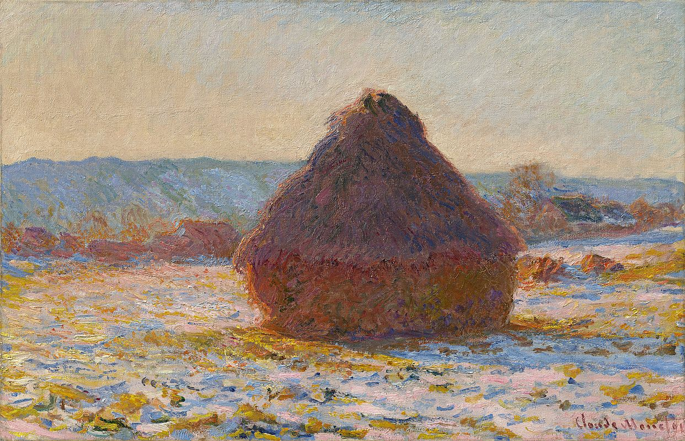

BEE'S ART & SOUND LIBRARY
把喜欢的事物，
留在日常里。
收集光、雪、纸页与旋律。每一幅画都可被放大细看；每一段声音，都可以成为书房的一种天气。

01 / WINTER LIGHTClaude Monet, 1891
PAINTING ARCHIVE
色彩与光的标本
寻找一幅你愿意在书房里反复看到的画。
38WORKS
馆藏精选来自芝加哥艺术博物馆 Open Access 公有领域图像，并保留作品来源链接。部分馆藏图像需联网加载；原有五幅画作可直接离线浏览。
SOUND ARCHIVE
给一间书房的十二首乐曲
钟琴、柔琴与绵长的和弦。都是在浏览器中实时演奏的原创氛围音乐。
12SCORES
♫
ORIGINAL AMBIENT SCORES
一首一首地，找到属于你的声音。
点击曲目即可试听；选中的配乐会记住，并在下次进入书房时继续使用。浏览器会在你主动操作后开始发声。
本馆为原创合成配乐，不是知名古典作品的录音、翻奏，也不是第三方流媒体。每首均可循环播放，音量和选择保存在当前浏览器。